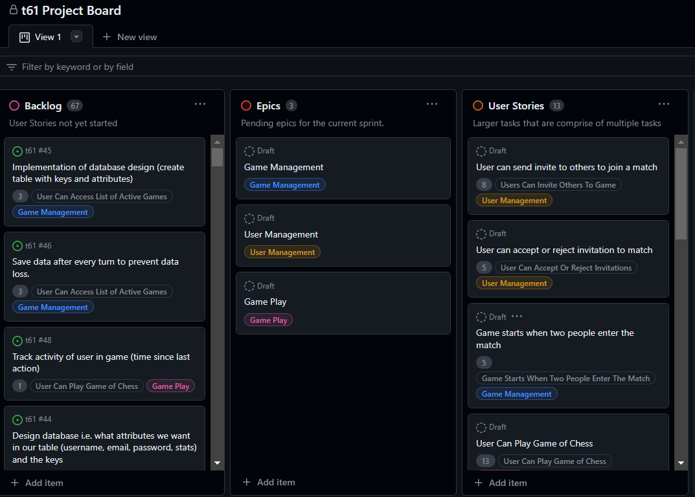
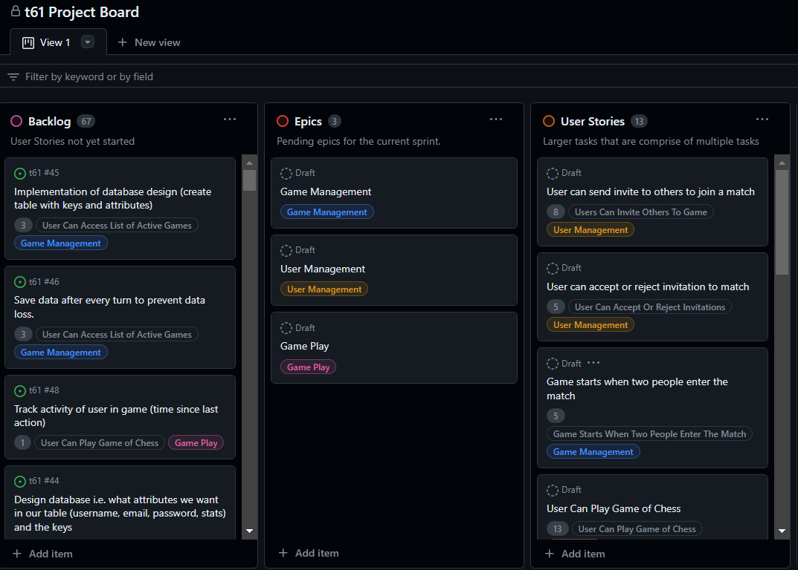

Web Chess Game
Langauges/Tools Used: Java and GitHub Projects
Working in a Scrum SDLC, I worked in a team of 4 other students to work on a chess web application similar to chess.com. The project focused on building the system from the ground up by translating customer requirements into user stories and modeling domains and classes. We were not expected to complete the project in its entirety because of it's scale, so there was a large focus on designing and redesigning the system to use design patterns and handle coupling and cohesion in the design. We were given full creative freedom to translate the requirements how we saw fit.
How it Works
Although our team did not finish the project in its entirety, the idea was that a user could login to our website and play chess alone against an AI opponent or an online opponent. Stats would be stored on each user such as wins/losses among other things and viewable on a profile. Information on past games including a game replay would also be implemented if we had more time. Unfortunately we only ended up getting login functionality setup as the project focused more on design than completing everything.
Skills Learned
Throughout this project I learned how to translate requirements into user stories and use design patterns to create a project from the down up. I also continued to grow my experience with working in a Scrum team.
 
